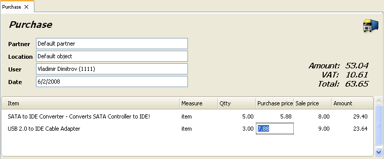

Achizitii
Achizitiile reprezinta cumpararea (primirea) a noi cantitati din anumite articole in deposit. Cantitatea articolului in stoc creste si se calculeaza media preturilor sau preturile de lot ale articolului. Aceasta operatie reprezinta termenul de contabilitate �Intrari�.
Pentru a completa fereastra Achizitii
(click pe icoana  �sau apasa tasta F3) efectuati
urmatoarele operatii:
�sau apasa tasta F3) efectuati
urmatoarele operatii:
In campul Partner completati numele companiei care
livreaza articolul.
Pentru a selecta un Partener, efectuati una din urmatoarele operatii:
- apasati tasta F4 in lista de parteneri;
- apasati tasta Enter in lista de parteneri;
- dublu-click pe partener in lista de parteneri;
- scrieti numele partenerului in campul partener;
- introduceti codul partenerului in campul pentru partener.
In campul Localizare completati numele sau codul
localizarii de unde vor fi achizitionate articolele.
Pentru a selecta o Localizare efectuati una din operatiile de mai jos::
- Folositi tasta F4 in lista de localizari;
- folositi tasta Enter in lista de localizari;
- dublu-click pe localizare in lista de localizari;
- introduceti numele localizarii in campul pentru localizare;
- introduceti codul localizarii in campul pentru localizare.
In campul pentru Utilizator completati numele angajatului care va
efectua achizitia.
Pentru a selecta un utilizator efectuati una din operatiile de mai jos:
- folositi tasta F4 in lista de utilizatori;
- folositi tasta Enter in lista de utilizatori;
- dublu-click pe utilizator in lista de utilizatori;
- introduceti numele utilizatorului in campul pentru utilizator;
- introduceti codul utilizatorului in campul pentru utilizator.
In campul pentru Articol completati articolul care urmeaza sa
fir achizitionat.
Pentru a selecta un articol efectuati una din operatiile de mai jos:
- folositi tasta F4 in lista de articole;
- introduceti numele articolului in campul pentru articol;
- dublu-click pe articol in lista de articole;
- introduceti codul articolului in lista de articole;
- introduceti (scanati) codul de bare in campul pentru articole.
In campul pentru Data completati data documentului.
Selectati data din fereastra Calendar perin apasarea tastei F4
sau dublu-click in campul pentru data.

Daca doriti sa selectati mai mult de un articol, deschideti lista de articole prin apasarea tastei F4, apasati si mentineti apasata tasta Ctrl si click pe fiecare articol din lista de articole, dorit a fi selectat. Se pot selecta articole consecutive prin apasarea si mentinerea apasata a tastei Shift si folosirea tastelor sageti sus / jos.
In coloana Cant completati numarul articolelor primite (receptionate). Apasati tasta Enter pentru a va muta in coloana urmatoare Pret Achizitie si completati pretul de achizitie al articolului. In coloana urmatoare Pret Vanzare completati pretul de vanzare al articolului care va fi aplicat pentru grupa de pret de desfacere client. Apasati tasta Enter pentru confirmarea datelor completate. Aplicatia va completa automat coloana Valoare (pret x cant). Folositi aceeasi metoda pentru a introduce datele pentru fiecare articol cumparate de client. Pentru salvare document apasati tasta F9. Pentru a sterge operatia apasati tasta Esc.
�2006-2012 Microinvest, All rights reserved